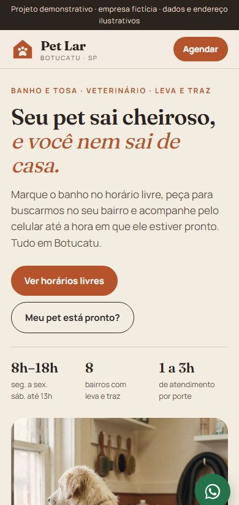
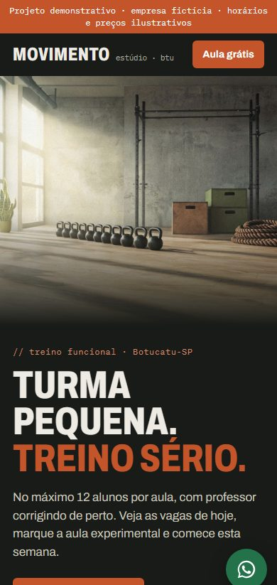

Dois sites completos de empresas fictícias, feitos para abrir no celular durante a visita ao cliente. Cada um tira da recepção as tarefas repetidas: agendar, tirar dúvida de preço, avisar que está pronto, controlar vaga.

Para o pet shop que vive com o WhatsApp lotado de "tem horário?" e "já tá pronto?".

Para o estúdio que controla vaga de turma em caderno e perde aluno novo por demora na resposta.